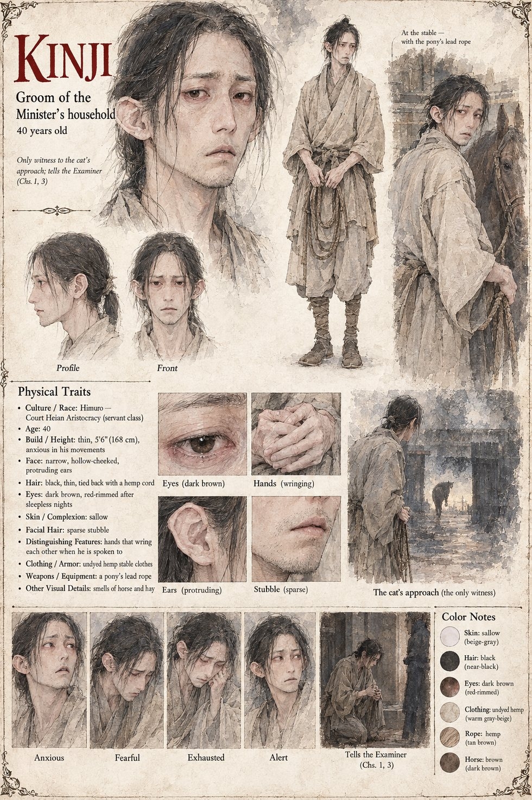

Kinji
Groom at the Festival of the Small Bow · the only man who saw the cat · 40 years old
A thin, anxious man of forty, the groom at the Festival of the Small Bow, who will remember every instant of the next ten seconds for the rest of a long life. Nobody else has seen Azuki smuggled into the meadow; he alone sees her slip from the basket of cushions under the awning's edge and cross the grass at a trot, tail up, toward the one pony she happens to know by smell. He is the fourteenth of fourteen witnesses the Examiner interviews between the thirteenth and the sixteenth of Eldren. Thirteen tell him that the pony bolted. Kinji has not slept; he sits on the floor of the Bureau's inquiry room with his hands pressed between his knees and says that he saw a cat, and had not wished to say so, because the cat was the Minister's own and no sort of explanation for the death of a Minister's grandson.
Yasutsugu writes it down in his plain brush-hand and goes out to the meadow, where a scrap of chestnut hair and three tufts of russet fur are waiting in the grass at the starting line, and the eleven sheets of his report follow from the groom's sentence. The report is held at the Minister's pleasure, and in the Plum Gate nobody says the word cat. The manuscript calls him only “the groom Kinji”; whom he served is not stated, and nothing is said of what became of him after the interview. The sheet's hollow-cheeked face, protruding ears and hands that wring each other when he is spoken to are its own.